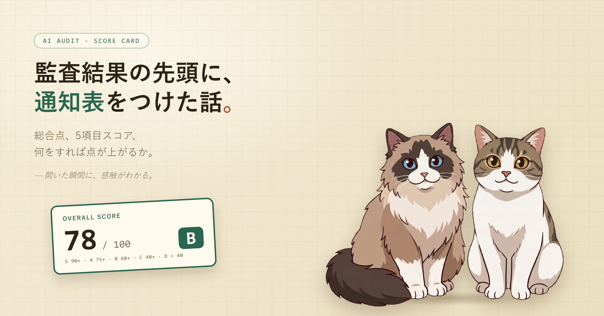

AI に「このリポジトリを脆弱性とバグの観点で見て」と頼むと、長い監査レポートが返ってくる。読み込めば中身はあるのだけど、開いた瞬間に「で、このプロジェクト、結局どうなの」が分からない。
レポートの先頭に通知表を置いた、その設計判断の過程を残しておきます。
公開しているプロンプト集（Claude / Codex 向けの監査雛形）を、自分でも使っています。返ってくるレポートには、finding が重大度つきでずらっと並びます。critical が 3、high が 5、medium が 12、low が 9、みたいな具合に。
ちゃんと書いてあるのですが、スクロールして本文を読まないと「ぼちぼち危ないのか、割と健全なのか」が掴めません。依頼者の立場でこれを開いたら、正直しんどい。
レポートというのは、先頭の数行がぜんぶです。そこに「感触」が出ないと、たぶん使ってもらえない。なので、先頭に総合点を置くことにしました。
最初に考えたのは ★★★☆☆ の 5 段階。直感的でいい。ただ、5 段階だと 72 点と 78 点の差が表現できません。改善した前後で同じ ★3 のまま、になってしまう。
では 100 点満点 か。今度は「78 点」と数字だけ見せられても、それが上なのか下なのか分かりにくい。学校なら何となく分かる温度感が、ソフトウェアの監査ではピンと来ない。
結局、両方を載せることにしました。
配点はこうしました。
学校の成績に乗っかった、ちょっと懐かしい配点です。
総合点だけだと、どこが弱いのかが見えません。なので 5 つの観点に分け、合計が 100 になるよう重みを振りました。
「8 項目とか 10 項目にしたほうが診断っぽくない？」も考えました。でも、項目が増えるとぱっと見の認知コストが上がります。10 個並んでいると「結局どこから手を付ければ」が逆に見えなくなる。
5 項目を眺める時間と、10 項目を眺める時間。たぶん前者のほうが、レポートを開いた人の集中力が長持ちします。
5 項目で粒度は十分だったのですが、ひとつだけ別の数字として見せたい軸がありました。バージョンの話です。
サーバーの OS が古いのと、アプリの依存ライブラリが古いのは、別の話です。前者はインフラ側の更新計画。後者は package.json や go.mod の話。同じ「古い」でも、誰がどこに手を入れるかも違います。
なので、項目はトップレベル 5 つに固定して、その下に小さくサブ項目を出す形にしました。
依存関係 12/15
└ アプリ依存版数 7/9 ・ ランタイム/SDK 版数 5/6
同じ表の中で、見たい人だけ視線を下げる、という構造です。サーバー診断のほうも同じ。「パッチ・更新状況」の下に「OS・カーネル版数」と「パッケージ版数」を別の数字で並べる。これで「サーバー側は古いがアプリ側は新しい」みたいな偏りが、表の中で見えるようになりました。
ここで一度書き終えたつもりだったのですが、立ち止まりました。点数を出して内訳も見せる。でも、「何をすれば点が上がるんですか」が書いていない。
通知表をもらった生徒に「君は数学 50 点ね」とだけ伝えても、何を勉強すれば足し戻せるかが分からなければ、意味がない。同じことを監査レポートでやっている、ということに気づきました。
なので、表に列を一つ足しました。
各カテゴリのとなりに、こういう 1 行を添える。何が引かれていて、何をすれば足し戻せるのか、が同じ表に並ぶようになります。
さらに、finding ひとつひとつにも「これを直すと総合 +N 点」というタグを付けることにしました。重大度と「上がる点数」のかけ算で finding を上から並べてあるので、頭から潰していけば最短で総合点が上がります。読み手にとって、優先順位を考える手間が一段減ります。
ひとつだけ、決めごとを足しました。
「100 点満点」は、「対象範囲に確定 finding がゼロ件」と定義する。
スコア ＝ 満点 − Σ（確定 finding の減点）。
引き算だけ、にしました。満点に意味を持たせると、AI が「いい感じ」を匂わせるためにスコアを甘く出す余地が減ります。finding が残っているなら満点にはならない、と紐付けておきたかった。
それと、確信度が低い疑い——敵対的検証で確定に至らなかったもの——は、減点には含めません。別枠に「判断待ち: M 件」とだけ件数を出します。曖昧な疑いで点を下げると、生徒側もどう挽回していいか分からないので、そこは切り離しました。
このリポジトリには、コード監査が 6 本、サーバー診断が 3 本、合計 9 本のプロンプトが置いてあります。設計が決まったら、あとは展開でした。
各プロンプトは独立した貼り付け用テキストなので、規約を 1 か所だけ更新して終わり、にはなりません。ただ、もともと「正本」を 2 つ置いて 9 本はそこに揃える運用にしてあったので、まず正本に書く → 9 本へ展開、の順で進めました。
文体はファイルによって違います。Codex 版は冗長な箇条書き、多エージェント版は記号区切りで簡潔、単体版は直列構造。同じ規約を、各ファイルの口調に合わせて書き直してから入れる。ここはエージェントに任せて、最後に grep で「9 ファイルとも同じキーワードが同じ回数出ているか」だけ確かめて終わり、にしました。
作ってみて思ったのは、レポートというのは 先頭の数行がぜんぶ、なんだなということでした。長い本文をきれいに整えるより、開いた瞬間に「総合 78 点・B 評価・依存関係が弱い・lodash を上げれば +3 点」が見えるほうが、たぶん使ってもらえる。スクロールして finding を読み込むのは、その「気になった人」の作業です。
書き手としては本文を頑張って書きたくなりますが、読み手は最初に判断したい。この順番を間違えると、せっかくの中身が届かない。レポートの先頭をどう作るか、これからも気にしていきます。小さく。